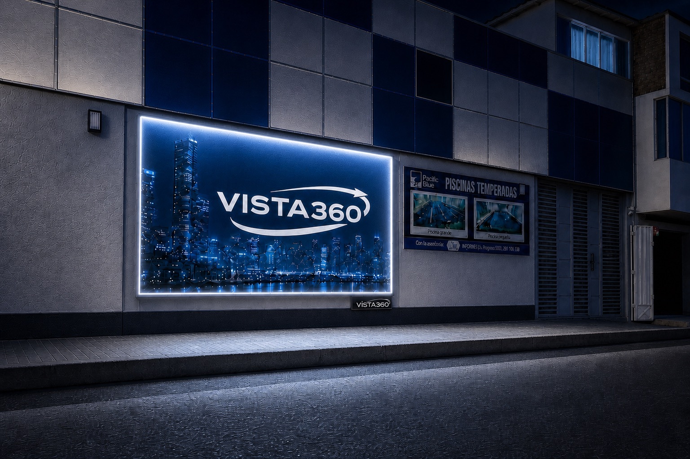
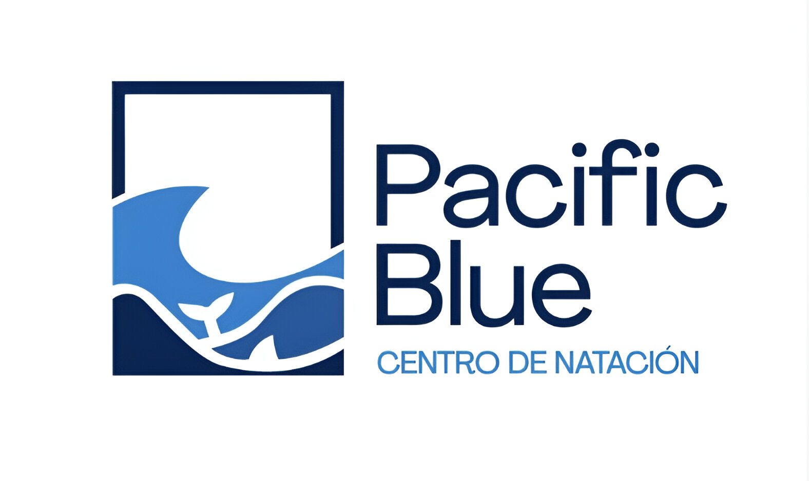

Arquitectura
El mural convierte una fachada en comunicación.

Murales, unipolares y tótems impresos para que tu marca ocupe un lugar real en el recorrido de la ciudad.
Consultar espacios Classic →Formatos físicos concebidos para ocupar la ciudad con escala, iluminación y una presencia constante durante toda la campaña.
Classic combina ubicación, escala, impresión e iluminación para construir una presencia constante. Cada soporte está pensado para una distancia y una forma distinta de recorrer la ciudad.
El mural convierte una fachada en comunicación.
El unipolar anticipa el mensaje desde la vía.
El tótem acompaña recorridos peatonales y accesos.

Selecciona una ubicación para ver el detalle completo.


01 / Jr. Progreso 560Mural iluminado en entorno céntrico de Huánuco.
Ver detalle →